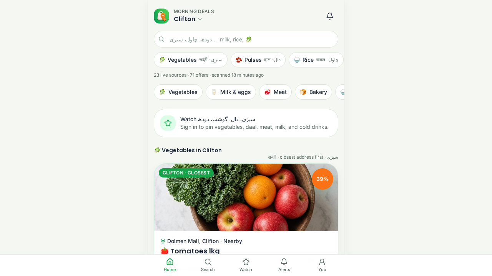
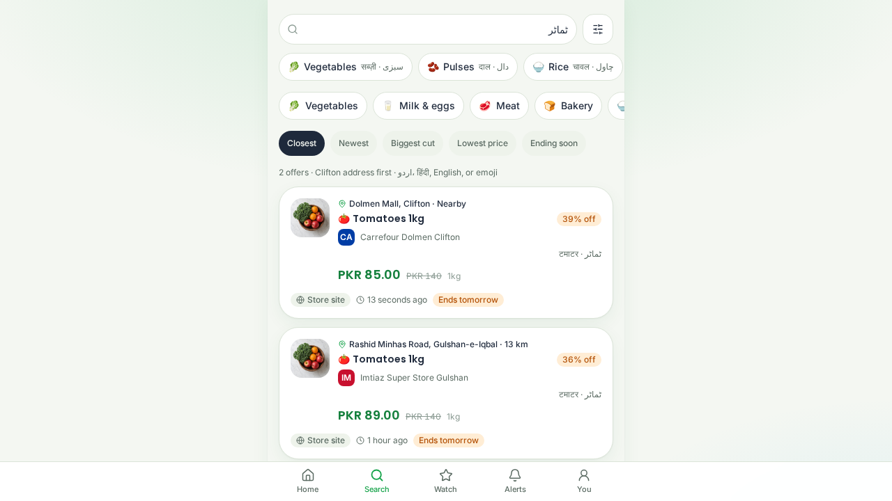

What you can do
- Browse the kitchen Vegetables, milk and eggs, meat, bakery, rice and daal, frozen food, drinks, snacks, and household goods.
- Ask the way you speak Tomato or tamatar, milk or doodh. A missed letter still finds the item, and distance stays on the card.
- Watch the weekly list Pin staples and neighbourhoods. Alerts land when a matching offer shows up.
- Read the same item twice Open a deal and see other shops’ printed tags for it, cheapest first.
- Keep a neighbourhood flyer One sheet of today’s sabzi, milk, and meat tags. Print it or share the text.
- Send in a price you saw Community submissions sit in a review queue until someone clears them.
A chain shelf can sit above a notified mandi rate. The card names the source: store site, flyer, or a person who typed it in. Free AI tools, vacations, and air tickets stay in a separate For you lane.
Where it looks
| City | Neighbourhoods |
|---|---|
| Karachi | Clifton, DHA, Gulshan-e-Iqbal, North Nazimabad |
| Lahore | DHA, Gulberg, Johar Town |
| Islamabad | F-10, F-7 Blue Area |
| Dubai | Marina, Jumeirah, Deira, Downtown, Al Nahda, Muhaisnah |
| Sharjah | Al Nahda, Al Qasimia |
| Ajman | Al Jerf, Al Bustan |
| London | Westminster, Camden, Greenwich |
| New York | Manhattan, Brooklyn, Queens |
Karachi staples can follow the notified sabzi list. Gulf neighbourhoods lean on the chains families already use — Talal, Madina, Faaz, Day to Day, Imtiaz, and the shops beside them.
